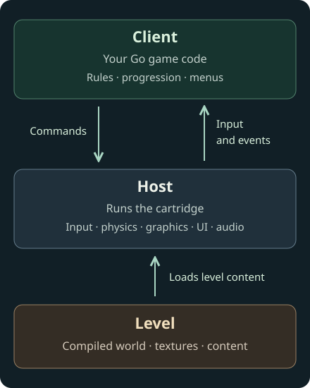

Architecture
A Karty game has three main parts: a client containing your game code, levels containing authored content, and a host that runs and presents the game. The CLI builds the files that bring them together.

The client contains the game rules
The client is your game's Go program. It decides what happens when a player presses a button, which level to load, how the score changes and when to show a menu. Here, client means game code on both desktop and web; it does not imply a network connection or multiplayer server.
The CLI compiles that code to WebAssembly and packages it in game.kart, the cartridge. The selected SDK supplies the generated API your code calls. Your game requests actions through that API and handles updates and events from the host.
The host provides the engine
The host runs the cartridge and provides input, entities, collision and physics, rendering, UI presentation and media playback. It validates commands before applying them and owns the runtime resources they create.
For example, your client proposes a character movement. The host resolves it against the world and returns the accepted transform. Your next movement starts from that accepted position. Game rules remain in your code; the host keeps the world and its presented state consistent.
Native releases include a platform host executable. Web releases use a WebAssembly host and browser support files. The game's SDK pin selects compatible bindings and hosts, so a game developer does not need the engine source. Read SDK versions and toolchains for what that pin selects and how to prepare the build tools.
A level groups content and its lifetime
A level starts with level.toml and its declared sources: a world, textures, actors and other level content. Building turns those sources into a versioned level file and any required sidecars.
Your client chooses when to load, mount and release a level. Mounting makes its content available to the running game. Cameras, actors and other level-owned resources depend on that mounted level; releasing it also releases its dependents. A level is content managed by the host, rather than another running program.
From an edit to a running game
The CLI resolves packages, processes assets, compiles the client and levels, and stages the result with a compatible host. karty dev repeats that work as you edit, then publishes a compatible resource update or reloads the preview.
The asset pipeline explains those build steps. The interaction guide shows how game code connects to authored content. Your project's .karty/docs/ defines the exact lifecycle and API available in its selected SDK.